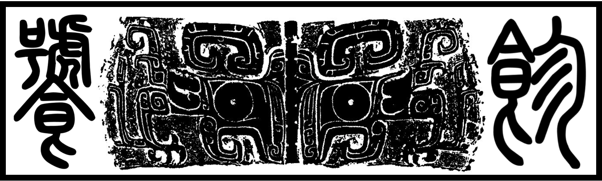

Tao Tie (饕餮) - A curated collection of resources for astrophysical research¶
“The taotie is a motif commonly found on Chinese ritual bronze vessels from the Shang and Zhou dynasty…In ancient Chinese mythology like “Classic of Mountains and Seas”, the “taotie” (饕餮) is one of the “four evil creatures of the world”…a greedy and gluttonous son of the Jinyun clan, who lived during the time of the legendary Yellow Emperor.” - Wikipedia
“缙云氏有不才子，贪于饮食，冒于货贿，天下谓之饕餮” - 《吕氏春秋·先识》
{kind=link}
Astronomy, Astrophysics, & Cosmology¶
General Topics about Research¶
Motivation and Goals¶
Over the past ~10 years, I have gradually accumulated some useful resources for astrophysical research and I believe the best way to make use of these information is to share them.
The name
taotie(饕餮) refers to a greedy and gluttonous monster in ancient Chinese myth. It is indeed very greedy and over-ambitious to collect all useful resources for astrophysics and cosmology.The goal of ``taotie`` is to become a curated list of resources for astronomy and astrophysics maintained by the community. Just like many other
awesomelists available onGitHub. We hopetaotiecan become the first stop for new student or researcher in astronomy to seek for practical guidance and experience. Andtaotiecan also be a handy and organized “bookmark” for researchers in different fields.
Progress and Plans¶
Under Construction: This repo is still under heavy and frequent development. I am currently working on this as a weekend project.
Currently working on improving the collections of
taotie, especially for research fields outside my personal comfort zone. Any help will be highly appreciated!Also working on improving the presentation by making a user-friendly website based on a list of markdown files.
On Using taotie (饕餮)¶
Now
taotieis available on both GitHub and GitLab. And you can also findtaotieusing this addressFor users in mainland China: in case the
Githublink below is not available, please replacegithubwithgitlaband try again. Please let me know if you have trouble accessing both sites.The main language for
taotieis English. Some of the important documents will be slowly translated into Chinese.Please let me know if you have any suggestion or recommendation.
Contribution¶
Contribution from the community is highly welcomed! Please feel free to fork the repo and make you own change. If you want your modifications be included in this repo, please submit a pull request (and make sure to describe the changes you made).
And if you notice anything wrong with the current content (wrong or unavailable link for example), please raise an issue.
Also, if your repo or project is included here and you are not comfortable with that, just let me know.